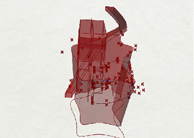

SOPH's logo is rendered in Rhino (3d rendering soft-ware) using a plugin called Grasshopper (node based algorithm editor). It is then translated into a vector logo mark with illustrator where type is also applied. Each component of the 3d model is designed using a flexible point system that is connected to a single number slider. The lower the number, the more complex the form is. As the number slider increases it’s value, the form simplifies itself.
x = 1
